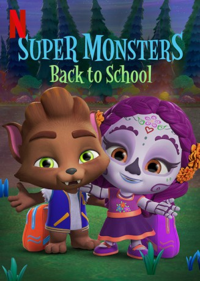

IMDB-Wertung: 7.0 / 10
IMDB-Wertung: 7.0 / 10  Metascore:
Metascore: 
Lobo's cousin Vida moves to town, Lobo shows her his favorite places around town, and the next day Vida has her first day of school.
 gesehen am 30.09.2019
gesehen am 30.09.2019 IMDB-Wertung: 7.0 / 10 Metascore:
Lobo's cousin Vida moves to town, Lobo shows her his favorite places around town, and the next day Vida has her first day of school.
Jahr: 2019
Dauer: 23 Minuten
FSK:
Land: Kanada Studio: NetflixTonspuren: - , - , - , - , - ,
Untertitel: Deutsch,
Auflösung: 1080p (1920x1080) Größe: 988 MB
Genre: Animation/Trick
Regisseur:
Drehbuch:
Soundtrack:
Darsteller:
Datei: X:\Kinder Collections\Super Monsters\Schulanfang für die Supermonster (2019, FSK, 1920x1080).mkv seit 30.09.2019
Festplatte: Kinder-Filme+Trick
 Es gibt insgesamt 7 Filme in der Gruppe 'Kinder Collections\Super Monsters'
Es gibt insgesamt 7 Filme in der Gruppe 'Kinder Collections\Super Monsters'